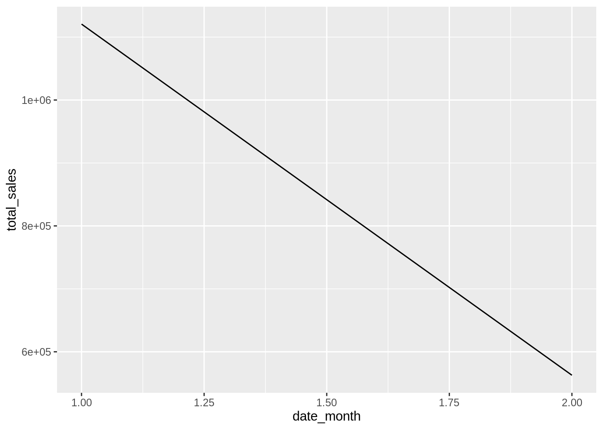

2 Introduction to dtplyr
2.1 dtplyr basics
Load data into R via data.table, and then wrap it with dtplyr
Load the
data.table,dplyr,dtplyr,purrrandfslibrariesRead the transactions.csv file, from the /usr/share/class/files folder. Use the
fread()function to load the data into a variable calledtransactionsPreview the data using
glimpse()## Observations: 250,000 ## Variables: 14 ## $ order_id <int> 1001, 1001, 1001, 1001, 1002, 1002, 1002, 1002, 1003, 1… ## $ customer_id <int> 22, 22, 22, 22, 6, 6, 6, 6, 80, 80, 80, 80, 80, 80, 55,… ## $ customer_name <chr> "Dr. Birdie Kessler", "Dr. Birdie Kessler", "Dr. Birdie… ## $ customer_phone <chr> "684.226.0455", "684.226.0455", "684.226.0455", "684.22… ## $ customer_cc <int64> 6011608753104063698, 6011608753104063698, 60116087531… ## $ customer_lon <dbl> -122.484, -122.484, -122.484, -122.484, -122.429, -122.… ## $ customer_lat <dbl> 37.7395, 37.7395, 37.7395, 37.7395, 37.7298, 37.7298, 3… ## $ date <chr> "2016-01-01", "2016-01-01", "2016-01-01", "2016-01-01",… ## $ date_year <int> 2016, 2016, 2016, 2016, 2016, 2016, 2016, 2016, 2016, 2… ## $ date_month <int> 1, 1, 1, 1, 1, 1, 1, 1, 1, 1, 1, 1, 1, 1, 1, 1, 1, 1, 1… ## $ date_month_name <chr> "Jan", "Jan", "Jan", "Jan", "Jan", "Jan", "Jan", "Jan",… ## $ date_day <chr> "Friday", "Friday", "Friday", "Friday", "Friday", "Frid… ## $ product_id <int> 6, 27, 30, 2, 17, 1, 5, 4, 27, 16, 30, 6, 11, 30, 30, 1… ## $ price <dbl> 9.88, 7.53, 5.64, 4.89, 6.48, 6.70, 4.27, 7.38, 7.53, 5…Use
lazy_dt()to “wrap” thetransactionsvariable into a new variable calleddt_transactionsView
dt_transactionsstructure withglimpse()## List of 7 ## $ parent :Classes 'data.table' and 'data.frame': 250000 obs. of 14 variables: ## ..$ order_id : int [1:250000] 1001 1001 1001 1001 1002 1002 1002 1002 1003 1003 ... ## ..$ customer_id : int [1:250000] 22 22 22 22 6 6 6 6 80 80 ... ## ..$ customer_name : chr [1:250000] "Dr. Birdie Kessler" "Dr. Birdie Kessler" "Dr. Birdie Kessler" "Dr. Birdie Kessler" ... ## ..$ customer_phone : chr [1:250000] "684.226.0455" "684.226.0455" "684.226.0455" "684.226.0455" ... ## ..$ customer_cc :integer64 [1:250000] 6011608753104063698 6011608753104063698 6011608753104063698 6011608753104063698 4964180480255037 4964180480255037 4964180480255037 4964180480255037 ... ## ..$ customer_lon : num [1:250000] -122 -122 -122 -122 -122 ... ## ..$ customer_lat : num [1:250000] 37.7 37.7 37.7 37.7 37.7 ... ## ..$ date : chr [1:250000] "2016-01-01" "2016-01-01" "2016-01-01" "2016-01-01" ... ## ..$ date_year : int [1:250000] 2016 2016 2016 2016 2016 2016 2016 2016 2016 2016 ... ## ..$ date_month : int [1:250000] 1 1 1 1 1 1 1 1 1 1 ... ## ..$ date_month_name: chr [1:250000] "Jan" "Jan" "Jan" "Jan" ... ## ..$ date_day : chr [1:250000] "Friday" "Friday" "Friday" "Friday" ... ## ..$ product_id : int [1:250000] 6 27 30 2 17 1 5 4 27 16 ... ## ..$ price : num [1:250000] 9.88 7.53 5.64 4.89 6.48 6.7 4.27 7.38 7.53 5.21 ... ## ..- attr(*, ".internal.selfref")=<externalptr> ## $ vars : chr [1:14] "order_id" "customer_id" "customer_name" "customer_phone" ... ## $ groups : chr(0) ## $ implicit_copy: logi FALSE ## $ needs_copy : logi FALSE ## $ env :<environment: R_GlobalEnv> ## $ name : symbol _DT1 ## - attr(*, "class")= chr [1:2] "dtplyr_step_first" "dtplyr_step"
2.2 Object sizes
Confirm that dtplyr is not making copies of the original data.table
Load the
lobstrlibraryUse
obj_size()to obtaintransactions’s size in memory## 23,019,560 BUse
obj_size()to obtaindt_transactions’s size in memory## 23,020,672 BUse
obj_size()to obtaindt_transactionsandtransactionssize in memory together## 23,020,672 B
2.3 How dtplyr works
Under the hood view of how dtplyr operates data.table objects
Use
dplyrverbs on top ofdt_transactionsto obtain the total sales by month## Source: local data table [?? x 2] ## Call: `_DT1`[, .(total_sales = sum(price)), keyby = .(date_month)] ## ## date_month total_sales ## <int> <dbl> ## 1 1 1120628. ## 2 2 562719. ## ## # Use as.data.table()/as.data.frame()/as_tibble() to access resultsLoad the above code into a variable called
by_monthUse
show_query()to see thedata.tablecode thatby_monthactually runs## `_DT1`[, .(total_sales = sum(price)), keyby = .(date_month)]Use
glimpse()to view howby_month, instead of modifying the data, only adds steps that will later be executed bydata.table## List of 6 ## $ parent :List of 9 ## ..$ parent :List of 6 ## .. ..$ parent :List of 7 ## .. .. ..- attr(*, "class")= chr [1:2] "dtplyr_step_first" "dtplyr_step" ## .. ..$ vars : chr [1:14] "order_id" "customer_id" "customer_name" "customer_phone" ... ## .. ..$ groups : chr "date_month" ## .. ..$ implicit_copy: logi FALSE ## .. ..$ needs_copy : logi FALSE ## .. ..$ env :<environment: R_GlobalEnv> ## .. ..- attr(*, "class")= chr [1:2] "dtplyr_step_group" "dtplyr_step" ## ..$ vars : chr [1:2] "date_month" "total_sales" ## ..$ groups : chr "date_month" ## ..$ implicit_copy: logi TRUE ## ..$ needs_copy : logi FALSE ## ..$ env :<environment: R_GlobalEnv> ## ..$ i : NULL ## ..$ j : language .(total_sales = sum(price)) ## ..$ on : chr(0) ## ..- attr(*, "class")= chr [1:2] "dtplyr_step_subset" "dtplyr_step" ## $ vars : chr [1:2] "date_month" "total_sales" ## $ groups : chr(0) ## $ implicit_copy: logi TRUE ## $ needs_copy : logi FALSE ## $ env :<environment: R_GlobalEnv> ## - attr(*, "class")= chr [1:2] "dtplyr_step_group" "dtplyr_step"Create a new column using
mutate()## Source: local data table [?? x 15] ## Call: copy(`_DT1`)[, `:=`(new_field = price/2)] ## ## order_id customer_id customer_name customer_phone customer_cc customer_lon ## <int> <int> <chr> <chr> <int64> <dbl> ## 1 1001 22 Dr. Birdie K… 684.226.0455 6011608753… -122. ## 2 1001 22 Dr. Birdie K… 684.226.0455 6011608753… -122. ## 3 1001 22 Dr. Birdie K… 684.226.0455 6011608753… -122. ## 4 1001 22 Dr. Birdie K… 684.226.0455 6011608753… -122. ## 5 1002 6 Meggan Bruen 326-151-4331 4964180… -122. ## 6 1002 6 Meggan Bruen 326-151-4331 4964180… -122. ## # … with 9 more variables: customer_lat <dbl>, date <chr>, date_year <int>, ## # date_month <int>, date_month_name <chr>, date_day <chr>, product_id <int>, ## # price <dbl>, new_field <dbl> ## ## # Use as.data.table()/as.data.frame()/as_tibble() to access resultsUse
show_query()to see thecopy()command being used## copy(`_DT1`)[, `:=`(new_field = price/2)]Check to confirm that the new column did not persist in
dt_transactions## Source: local data table [250,000 x 14] ## Call: `_DT1` ## ## order_id customer_id customer_name customer_phone customer_cc customer_lon ## <int> <int> <chr> <chr> <int64> <dbl> ## 1 1001 22 Dr. Birdie K… 684.226.0455 6011608753… -122. ## 2 1001 22 Dr. Birdie K… 684.226.0455 6011608753… -122. ## 3 1001 22 Dr. Birdie K… 684.226.0455 6011608753… -122. ## 4 1001 22 Dr. Birdie K… 684.226.0455 6011608753… -122. ## 5 1002 6 Meggan Bruen 326-151-4331 4964180… -122. ## 6 1002 6 Meggan Bruen 326-151-4331 4964180… -122. ## # … with 8 more variables: customer_lat <dbl>, date <chr>, date_year <int>, ## # date_month <int>, date_month_name <chr>, date_day <chr>, product_id <int>, ## # price <dbl> ## ## # Use as.data.table()/as.data.frame()/as_tibble() to access resultsUse
lazy_dt()with theimmutableargument set toFALSEto avoid the copy## Source: local data table [250,000 x 14] ## Call: `_DT2` ## ## order_id customer_id customer_name customer_phone customer_cc customer_lon ## <int> <int> <chr> <chr> <int64> <dbl> ## 1 1001 22 Dr. Birdie K… 684.226.0455 6011608753… -122. ## 2 1001 22 Dr. Birdie K… 684.226.0455 6011608753… -122. ## 3 1001 22 Dr. Birdie K… 684.226.0455 6011608753… -122. ## 4 1001 22 Dr. Birdie K… 684.226.0455 6011608753… -122. ## 5 1002 6 Meggan Bruen 326-151-4331 4964180… -122. ## 6 1002 6 Meggan Bruen 326-151-4331 4964180… -122. ## # … with 8 more variables: customer_lat <dbl>, date <chr>, date_year <int>, ## # date_month <int>, date_month_name <chr>, date_day <chr>, product_id <int>, ## # price <dbl> ## ## # Use as.data.table()/as.data.frame()/as_tibble() to access resultsCreate a
new_fieldcolumn inm_transactionsusingmutate()## Source: local data table [?? x 15] ## Call: `_DT2`[, `:=`(new_field = price/2)] ## ## order_id customer_id customer_name customer_phone customer_cc customer_lon ## <int> <int> <chr> <chr> <int64> <dbl> ## 1 1001 22 Dr. Birdie K… 684.226.0455 6011608753… -122. ## 2 1001 22 Dr. Birdie K… 684.226.0455 6011608753… -122. ## 3 1001 22 Dr. Birdie K… 684.226.0455 6011608753… -122. ## 4 1001 22 Dr. Birdie K… 684.226.0455 6011608753… -122. ## 5 1002 6 Meggan Bruen 326-151-4331 4964180… -122. ## 6 1002 6 Meggan Bruen 326-151-4331 4964180… -122. ## # … with 9 more variables: customer_lat <dbl>, date <chr>, date_year <int>, ## # date_month <int>, date_month_name <chr>, date_day <chr>, product_id <int>, ## # price <dbl>, new_field <dbl> ## ## # Use as.data.table()/as.data.frame()/as_tibble() to access resultsUse
show_query()to see thatcopy()is no longer being used## `_DT2`[, `:=`(new_field = price/2)]Inspect
m_transactionsto see thatnew_fieldhas persisted## Source: local data table [250,000 x 15] ## Call: `_DT2` ## ## order_id customer_id customer_name customer_phone customer_cc customer_lon ## <int> <int> <chr> <chr> <int64> <dbl> ## 1 1001 22 Dr. Birdie K… 684.226.0455 6011608753… -122. ## 2 1001 22 Dr. Birdie K… 684.226.0455 6011608753… -122. ## 3 1001 22 Dr. Birdie K… 684.226.0455 6011608753… -122. ## 4 1001 22 Dr. Birdie K… 684.226.0455 6011608753… -122. ## 5 1002 6 Meggan Bruen 326-151-4331 4964180… -122. ## 6 1002 6 Meggan Bruen 326-151-4331 4964180… -122. ## # … with 9 more variables: customer_lat <dbl>, date <chr>, date_year <int>, ## # date_month <int>, date_month_name <chr>, date_day <chr>, product_id <int>, ## # price <dbl>, new_field <dbl> ## ## # Use as.data.table()/as.data.frame()/as_tibble() to access results
2.4 Working with dtplyr
Learn data conversion and basic visualization techniques
Use
as_tibble()to convert the results ofby_monthinto atibble## # A tibble: 2 x 2 ## date_month total_sales ## <int> <dbl> ## 1 1 1120628. ## 2 2 562719.Load the
ggplot2libraryUse
as_tibble()to convert before creating a line plot
2.5 Pivot data
Review a simple way to aggregate data faster, and then pivot it as a tibble
Load the
tidyrlibraryGroup
db_transactionsbydate_monthanddate_day, then aggregatepriceintototal_sales## Source: local data table [?? x 3] ## Call: `_DT1`[, .(total_sales = sum(price)), keyby = .(date_month, date_day)] ## ## date_month date_day total_sales ## <int> <chr> <dbl> ## 1 1 Friday 173787. ## 2 1 Monday 139347. ## 3 1 Saturday 177207. ## 4 1 Sunday 177685. ## 5 1 Thursday 156396. ## 6 1 Tuesday 141127. ## ## # Use as.data.table()/as.data.frame()/as_tibble() to access resultsCopy the aggregation code above, collect it into a
tibble, and then usepivot_wider()to make thedate_daythe column headers.dt_transactions %>% group_by(date_month, date_day) %>% summarise(total_sales = sum(price)) %>% as_tibble() %>% pivot_wider(names_from = date_day, values_from = total_sales)## # A tibble: 2 x 8 ## date_month Friday Monday Saturday Sunday Thursday Tuesday Wednesday ## <int> <dbl> <dbl> <dbl> <dbl> <dbl> <dbl> <dbl> ## 1 1 173787. 139347. 177207. 177685. 156396. 141127. 155081. ## 2 2 80580. 83118. 84947. 80768. 77853. 79288. 76166.